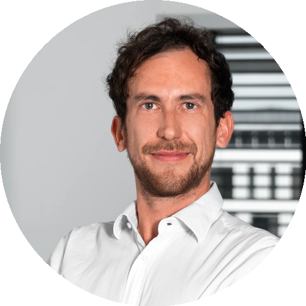

Alexandre J.E Perez — MedTech R&D & innovation
I bring connected & medical devices from concept to production.
Microsystems engineer, former startup CTO and inventor. For six years I led the R&D of the Pneumoscope — an AI-powered connected diagnostic device — from first sketch to a CE-mark compliant Class IIa product, with a European patent and a Nature Digital Medicine publication along the way.

Lausanne · Remote (EU)Profile — engineer, builder, inventor
I work at the intersection of hardware, connected health and regulated product development. My background is in microsystems engineering (microtechnique), with a Master's in Innovation for Product & Business Development — and a decade of hands-on work in startups and MedTech.
At Geneva University Hospitals (HUG) I led the Pneumoscope from concept to industrial-scale production: hardware/software integration, miniaturization, clinical validation and the full EU MDR Class IIa CE certification. Earlier, I co-founded and ran the technical side of 3Dfunlab, a 3D-printing hardware startup.
What I enjoy most is the rare combination this work demands — turning physiological science and electronics into a product people can actually use, while keeping it safe, validated and certifiable.
That's me, building a Pneumoscope by hand — the connected medical device I took from a blank sheet to a CE-mark compliant product. I don't just lead hardware; I build it.
Explore — three ways in
Experience & education
A decade across MedTech R&D, innovation and entrepreneurship — and the academic foundations behind it.
Open / 02 — WorkPneumoscope & 3Dfunlab
The flagship connected diagnostic device, end to end — plus the 3D-printing startup that started it all.
Open / 03 — ProofPress, publications & patent
A European patent, peer-reviewed science in Nature Digital Medicine, and coverage in the tech press.
Open